What Is Service Discovery?
Service Discovery In Microservices
The target audience for this article falls into the following roles:
- Tech workers
- Students
- Engineering managers
The prerequisite to reading this article is fundamental knowledge of system design components. This article does not cover an in-depth guide on individual system design components.
Disclaimer: The system design questions are subjective. This article is written based on my research on the topic and might differ from real-world implementations. Feel free to share your feedback and ask questions in the comments.
Download my system design playbook for free on newsletter signup:
Introduction
A monolith application executes a function call to facilitate communication between services. The services in a microservice architecture are typically deployed on separate machines to attain improved fault tolerance. Therefore, the communication between services must be routed over the network in a microservice architecture 1.
The service location (combination of the IP address and port number) and binding (transport mechanism such as TCP for calling the endpoint) should be identified to interact with an instance of the service provider 2. The identification of the service location and management of resources in a microservice is challenging due to the dynamic nature of resources. On top of that, monitoring the health of system components such as the database, and message queue is crucial for increased reliability 3.
Requirements
The system requirements can be summarized as follows 2, 4, 5.
Functional Requirements
- service information can be written, read, deleted, or updated
- services can be searched
- provide RESTful API
- support checks at the service level
Non-Functional Requirements
- high availability
- low memory and CPU footprint
- reliability
- low latency
Terminology
The following terminology might be helpful for you:
- service provider: a service exposing an Application Programming Interface (API) such as Representational State Transfer (REST)
- service consumer: a service that reads and writes data
- service registry: a database that stores locations of all available service instances
- service location: a combination of Internet Protocol (IP) address and port number
What Is the Need for Service Discovery?
The location of a service instance is required to interact with the service provider. The count of service instances and service location change dynamically in a microservice architecture. Service discovery is the process of retrieving the list of instances of a service provider for interaction between service consumers and the server provider 6.
The service registry is the database component of service discovery that stores the service locations (IP addresses and port numbers) to provide runtime service endpoint resolution 7. The service instances must register with the service registry on startup and deregister on shutdown.
Service Discovery API
The service discovery can expose a RESTful or Remote Procedure Call (RPC) based API 8.
How does a service instance register on the service registry?
The service instance (client) can execute a Hypertext Transfer Protocol (HTTP) PUT request to register the service instance to the service registry.
|
|
The server responds with status code 200 OK on success.
|
|
The server responds with status code 400 bad request to indicate a failed request due to an invalid request payload by the client.
|
|
How does a service instance deregister from the service registry?
The client can execute an HTTP DELETE request to deregister a service instance.
|
|
The server responds with status code 204 No Content on success.
|
|
How does a service consumer fetch the list of instances by a service provider?
The client can execute an HTTP GET request to fetch the list of service instances.
|
|
A successful response from the server can include status code 200 OK.
|
|
Service Discovery Database
The service registry data model should be kept flexible to accommodate future service deployments. The attributes of a service instance can be extended via key-value pairs in the metadata table 9. The major entities of the service discovery data schema are shown in Figure 1.
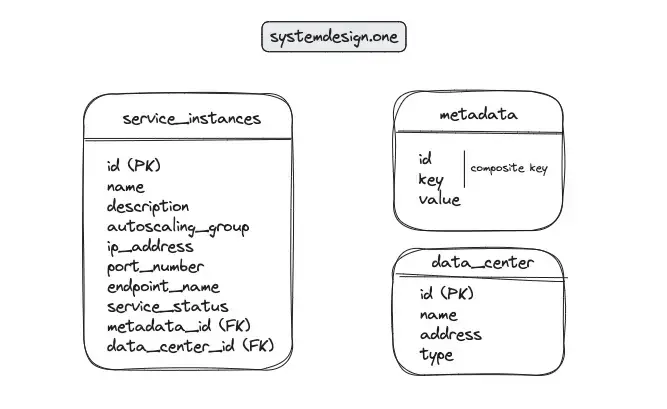
The operational metadata of a service instance could also include information about the active UDP sockets, TCP sockets, process names, path to the process executables, and the command line arguments 10, 11.
Further system design learning resources
Download my system design playbook for free on newsletter signup:
Service Discovery Architecture
Service Discovery Write Workflow
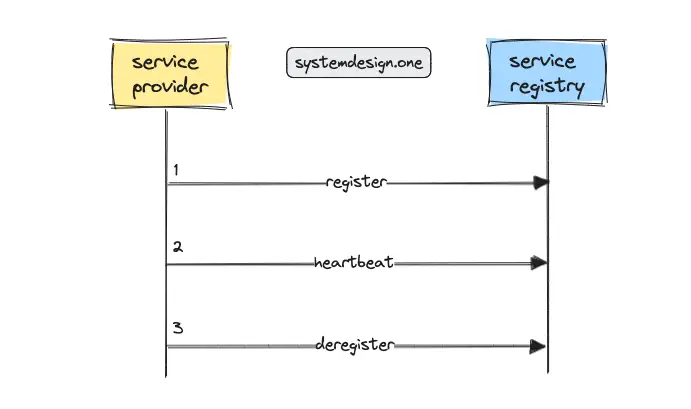
The service provider provides its IP address and port number to register on the service registry. The periodic heartbeat signal is used to indicate the liveness status of a service instance. The polite service instances usually deregister themselves on shutdown. The absence of a heartbeat signal for an extended period caused by an abrupt shutdown of the service marks the instance as dead automatically 9.
Service Discovery Read Workflow
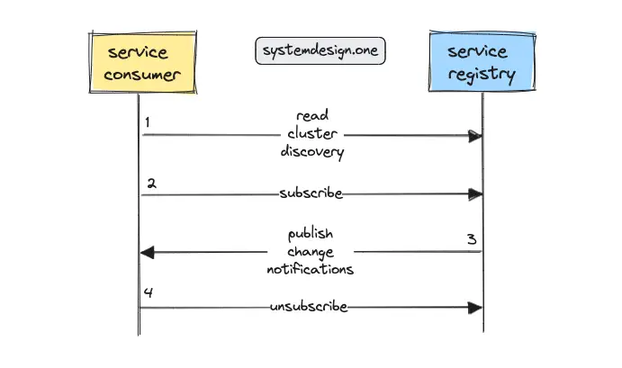
The publish-subscribe (pub-sub) pattern can be used to implement a reliable service discovery. The service consumers should subscribe to the interested service providers on the service registry. Any changes to the service providers are pushed to the subscribed service consumers by the service registry 9, 2.
How to Implement Service Discovery in Microservices?
The different techniques to implement service discovery in a microservice architecture are the following 5, 2, 4:
- hard code the service location in the service consumers
- external configuration file
- DNS-based service discovery
- service discovery using a load balancer
- service registry
Service Discovery With Hard Coded Service Location
A trivial approach to implementing service discovery is through manual management of the service provider locations within the application code of service consumers. However, the technique of manual management is error-prone and will not scale as the number of services increases 3.
In addition, hard coding the service location limits the service consumer to perform only certain types of load balancing and also makes it non-trivial to relocate the service instances due to tight coupling between the service consumer and service provider locations 5, 2. In summary, do not hard code the service provider locations to enable service discovery in a microservice architecture.
Service Discovery With Configuration File
An external configuration file that is local to the service consumer can be used to store the location of the service providers. The external configuration file on the service consumers allows changes to the service provider without performing any code changes to the service consumers. The external configuration file can be modified with a configuration management tool such as Puppet or Chef 4.
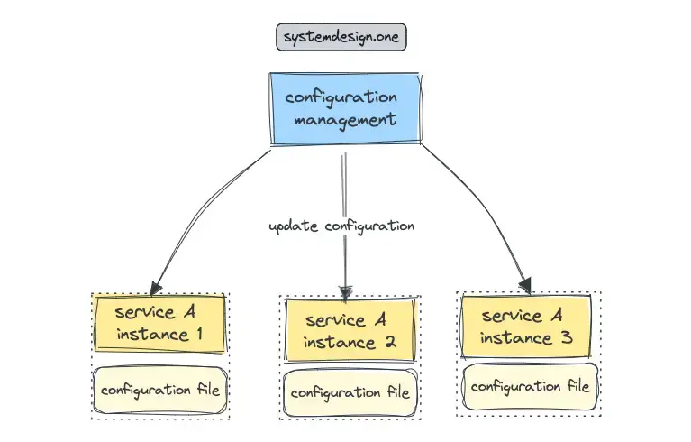
The primary benefit of utilizing an external configuration file is the trivial implementation of service discovery 4. The downsides of this approach are as follows 2:
- scalability problems when the count of service consumers or service providers increases
- non-trivial implementation of heartbeats to support health checks
In summary, do not use an external configuration file to implement service discovery in a microservice architecture.
Service Discovery With DNS
The Domain Name System (DNS) is a distributed database that supports service discovery via the resolution of service names to IP addresses 5. The primary difference between service discovery and DNS is that service discovery handles a dynamic number of service instances while DNS handles only a static number of service instances 1.
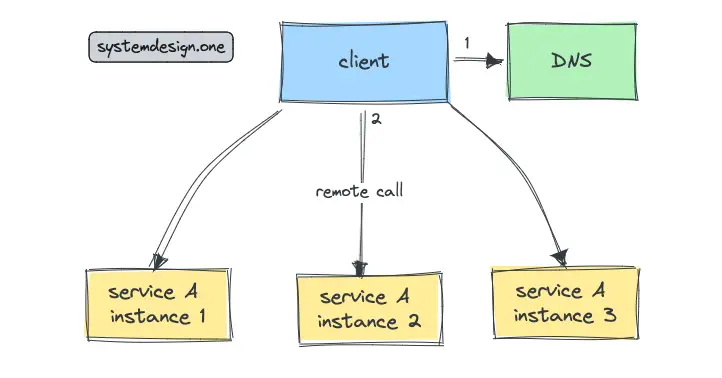
DNS is a proven technology that works on a large scale and provides the following benefits 12, 5:
- reliability through replication
- built-in cache support
- trivial configuration
As everything comes with a price, DNS holds the following drawbacks 4:
- offers only a crude interface to execute any updates
- stale data due to multi-level cache
- limited horizontal scalability of the system due to the delay in updating the state of a service
In summary, do not use DNS to build service discovery in a microservice architecture.
Service Discovery With Load Balancer
A load balancer can be introduced in front of each service provider to facilitate service discovery. The tradeoffs with this approach are the following 1:
- slightly degraded latency due to an additional network hop
- the load balancer becomes a single point of failure
- increased system complexity due to numerous load balancers
- increased effort for management of the load balancers
In summary, do not implement service discovery with load balancers in a scalable microservice architecture.
Service Discovery With Service Registry
The service registry is a database that contains the locations of the instances by a service provider. The service registry is also known as a discovery server. The key idea behind the service registry is to use a distributed key-value store to store the service configuration and service locations. The simplest service registry can be implemented using a key-value store such as Redis 6.
The instances of a service provider must register to the service registry on startup. The service consumers query the service registry to identify the instances of a service provider 1. The service registry persists also information about invocation policies for each service provider 2. In conclusion, it is recommended to build service discovery with a service registry in a scalable microservice architecture.
Service Discovery Patterns
The different patterns for service discovery are the following 6:
- client-side service discovery
- server-side service discovery
Client-Side Service Discovery
The service consumer determines the location of a service provider instance by directly querying the service registry. The service consumer performs load balancing through either a round-robin or a consistent hashing algorithm 6. The following is the workflow for client-side service discovery:
- the service provider registers to the service registry on the startup
- the service consumer performs a lookup operation on the service registry for the location of a service provider
- the service registry returns the location of a healthy instance
- the service consumer invokes the service instance
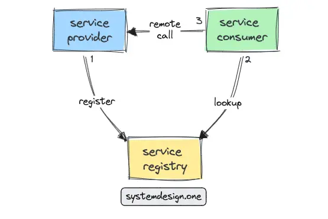
The benefits of client-side service discovery are as follows 8:
- improved fault tolerance due to resilience against load balancer failures by caching service information on the client
- slightly improved latency due to a decrease in the count of network hops
On the other hand, the limitations of client-side service discovery are the following 6:
- increased client-side complexity
- increased coupling between service discovery logic and service consumers causes difficulty to reimplement service discovery logic with different types of clients and frameworks
The sidecar pattern can be used to mitigate the coupling between the service consumers and service discovery logic.
Server-Side Service Discovery
The service discovery pattern typically used on a production system is server-side service discovery. The instances of a service provider are put behind the load balancer and the client requests are routed via the load balancer. The service configuration and service locations are stored in the service registry 6. The following is the workflow for server-side service discovery:
- the service provider registers with the service registry on the startup
- the service consumer executes a service request to the load balancer
- the load balancer performs a lookup operation for the service location on the service registry
- the service registry returns the list of healthy instances to the load balancer
- the load balancer forwards the request to an instance of the service provider based on the load-balancing algorithm
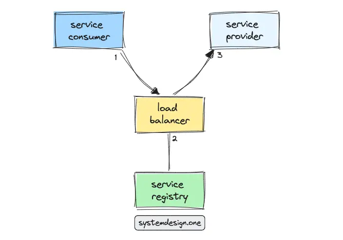
The advantages of server-side service discovery are the following 13:
- trivial implementation
- loose coupling between the service consumers and service providers
- latency limits can be defined for smart request routing to healthy service instances
On the contrary, the limitations of server-side service discovery are increased system complexity and slightly degraded latency due to an additional network hop 6, 3.
Further system design learning resources
Download my system design playbook for free on newsletter signup:
Service Discovery Architecture Deep Dive
Service Discovery In Microservices
The registry database is the core of service discovery because the registry database stores information about all the available services in the system. The registry service encapsulates access to the registry database through a set of APIs. The registry service delivers the following benefits 2, 9:
- abstracts the database schema and database interactions from the service consumers
- minimizes the count of database connections to improve performance and throughput
- support publish-subscribe model to inform service consumers about any service changes in near real-time
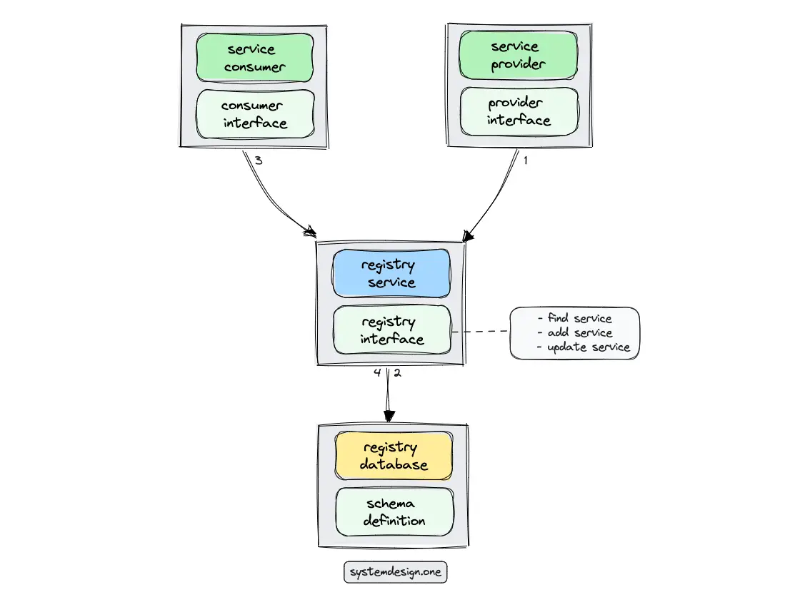
Health checks can be configured against the service provider to improve reliability. The service registry must be replicated to avoid a single point of failure and to provide high availability. The popular implementations of the service registry are the following 6, 4, 13:
| Tool | CAP Theorem | Consensus | Description |
|---|---|---|---|
| Apache Zookeeper | CP | Zab | Filesystem-like API |
| CoreOS Etcd | CP | Raft | Key-value store with HTTP API |
| Hashicorup Consul | CP | Raft | Gossip protocol, RESTful API, key-value store |
| Netflix Eureka | AP | - | RESTful API, cached client that polls |
Apache Zookeeper
Zookeeper supports Zab consensus protocol and provides a filesystem-like API.
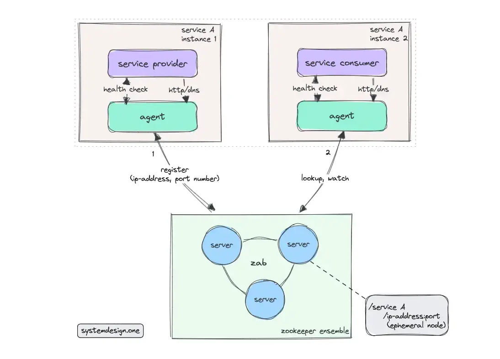
The following operations are executed when the service provider registers with the Zookeeper 14:
- Zab protocol is leveraged to attain a consensus on the current location and status of the service instance
- A parent node is created in Zookeeper to represent the service type
- Child nodes are created in Zookeeper to depict the service instances
Zookeeper nodes are ephemeral and support only rudimentary health checks 14.
Hashicorp Consul
The consul cluster consists of consul agents (clients) and consul servers. The consul agents are usually deployed alongside the service instances. The consul agent interacts with the consul server on behalf of the service instance. The consul agent is usually the API endpoint of the consul service. The service information is stored only by the consul server 4.
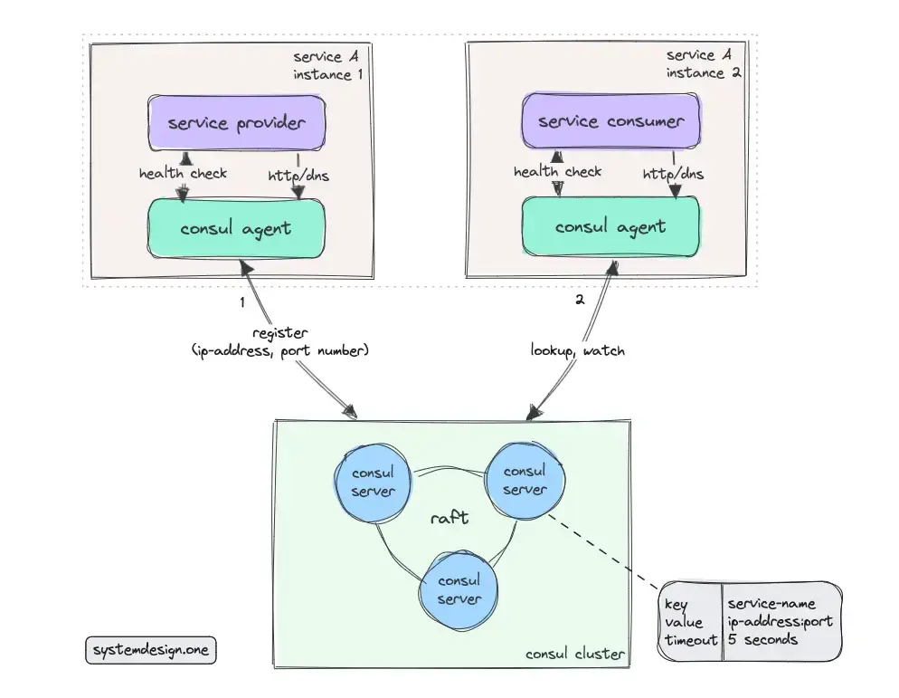
The service consumer can query the consul agent over HTTP. The consul agent executes a periodic health check on the service provider to check whether the service instance is still healthy. The instance can also proactively push the health data to the consul agent or mark itself as unhealthy when there is no response received from the consul agent due to a network partition 4.
Consul supports Raft consensus protocol. The gossip protocol is used by Consul to check the service membership status at a high scale 14. The consul agent can interact with any consul server over HTTP. Consul is also often used as a key-value store for service configurations. Consul supports a DNS interface beside an HTTP API interface to support service discovery with legacy services 15.
Netflix Eureka
Netflix Eureka consists of the Eureka server (service registry) and the Eureka client. The Eureka client simplifies the server interaction by handling load balancing and failover support. Eureka server offers a RESTful API and is typically deployed on Amazon Web Services (AWS) hyperscaler 16, 17.
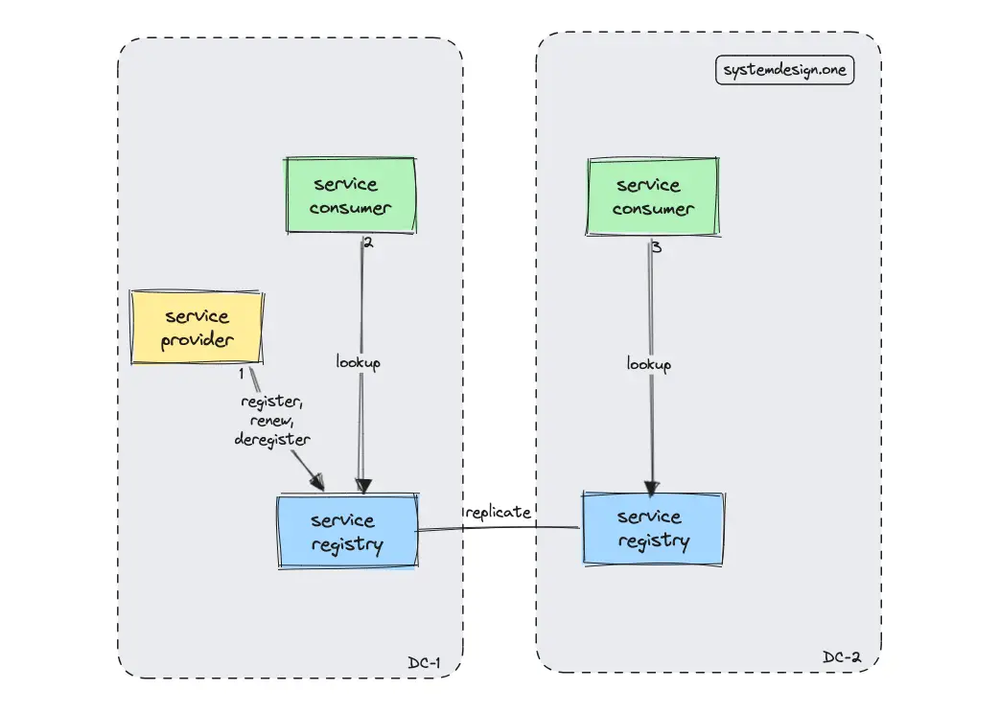
Netflix Eureka is an optimal choice to implement client-side service discovery and client-side load balancing. The Eureka client caches the service registry to achieve high availability 8. The architecture of Eureka favors availability over consistency. Therefore, the staleness of the service registry should be expected by the client. The client must be ready to perform an automated failover due to the potential staleness of the registry to achieve improved reliability 9.
The service registry is replicated across multiple data centers for high availability and low latency. The registered service instances will send periodic heartbeat signals every thirty seconds. The service instance is automatically deregistered from the service registry if heartbeat signals are not received for a few minutes 8, 17.
Alternative Implementations of Service Discovery
The CoreOS’s Etcd is similar to Apache Zookeeper and forms a cluster through the Raft consensus protocol. Etcd is a key-value store and supports RPC API 14.
Alternatively, Conflict-free Replicated Data Type (CRDT) can be used to build an eventually consistent service discovery. The CRDT set data type can be used to persist the membership list. The gossip protocol can be used to propagate the state of the application across the cluster 14.
Service Registration in Service Discovery
The different techniques for service registration in service discovery are the following:
- self-registration
- third-party registration
Self Registration
A service instance must register and deregister on its own from the service registry. The self-registration service discovery approach keeps the system complexity low at the expense of increased coupling between the service instance and the service registry. Besides, the service registration logic must be reimplemented in different programming languages and frameworks in a microservices architecture.
Third-Party Registration
A third-party library or service can be used to reduce the coupling between the service instances and the service registry. The third-party registration approach eliminates the need to reimplement registration logic in different programming languages and frameworks.
Summary
Service Discovery is a crucial aspect to implement the microservices architecture. The service discovery enables loose coupling between the service provider and service consumers 5. Service discovery is implemented in internet-scale systems such as Pastebin and URL shortener.
What to learn next?
Download my system design playbook for free on newsletter signup:
License
CC BY-NC-ND 4.0: This license allows reusers to copy and distribute the content in this article in any medium or format in unadapted form only, for noncommercial purposes, and only so long as attribution is given to the creator. The original article must be backlinked.
References
-
Armon Dadgar, Introduction to HashiCorp Consul with Armon Dadgar (2018), HashiCorp ↩︎
-
Boris Lublinsky, Implementing a Service Registry for .NET Web Services (2008), infoq.com ↩︎
-
Kent Weare, Amazon Introduces AWS Cloud Map: Service Discovery for Cloud Resources (2018), infoq.com ↩︎
-
York Xyander, Bodo Junglas, Resilience, Service Discovery and Zero Downtime Deployment in Microservice Architectures (2015), infoq.com ↩︎
-
Jan Algermissen, Using DNS for REST Web Service Discovery (2010), infoq.com ↩︎
-
Ian Cooper, Service Discovery and Clustering for .NET developers (2016), infoq.com ↩︎
-
Ben Wilcock, DIY SOA: How to build your own Simple Service Repository (2011), infoq.com ↩︎
-
Karthikeyan Ranganathan, Netflix Shares Cloud Load Balancing And Failover Tool: Eureka! (2012), Netflix TechBlog ↩︎
-
Eureka 2.0 Architecture Overview (2015), GitHub.com ↩︎
-
Matt Campbell, Gremlin Adds Automated Service Discovery for Targeting Chaos Experiments (2021), infoq.com ↩︎
-
Steef-Jan Wiggers, Google Introduces Service Directory to Manage All Your Services in One Place at Scale (2020), infoq.com ↩︎
-
Daniel Bryant, Mesosphere Release Mesos-DNS Service Discovery for Apache Mesos (2015), infoq.com ↩︎
-
Mike Amundsen, Description, Discovery, and Profiles: A Primer (2015), infoq.com ↩︎
-
Mushtaq Ahmed, Unmesh Joshi, Service Discovery Using CRDTs (2018), infoq.com ↩︎
-
Carlos Sanchez, Service Discovery with Consul (2015), infoq.com ↩︎
-
Abel Avram, Netflix Open Sources Their AWS Service Registry, Eureka (2012), infoq.com ↩︎
-
Abhijit Sarkar, Spring Cloud Netflix Eureka - The Hidden Manual (2017), blogs.asarkar.com ↩︎